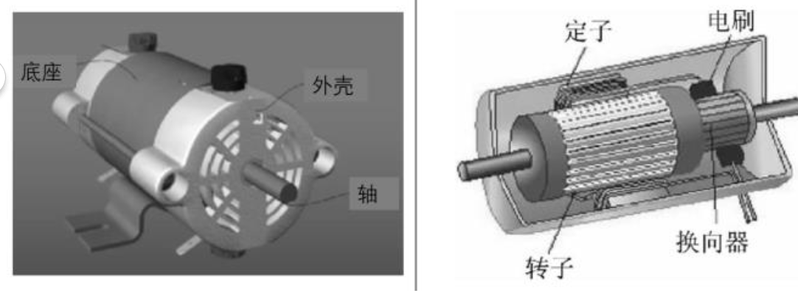
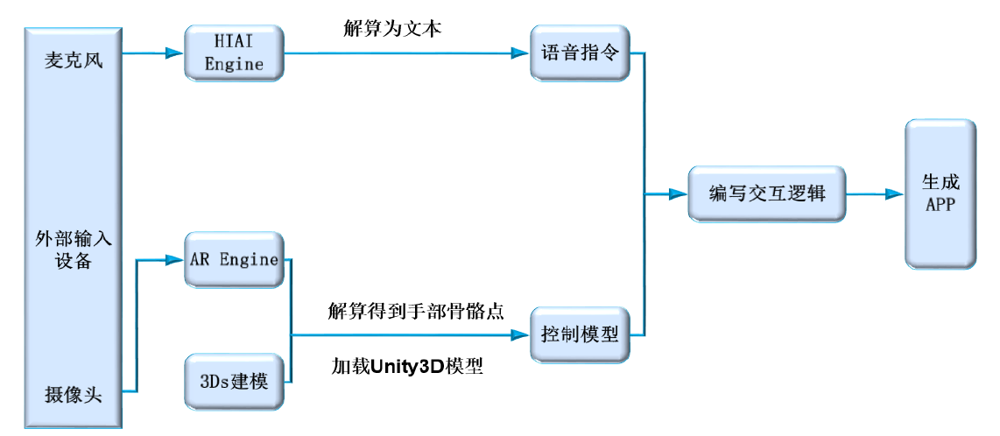
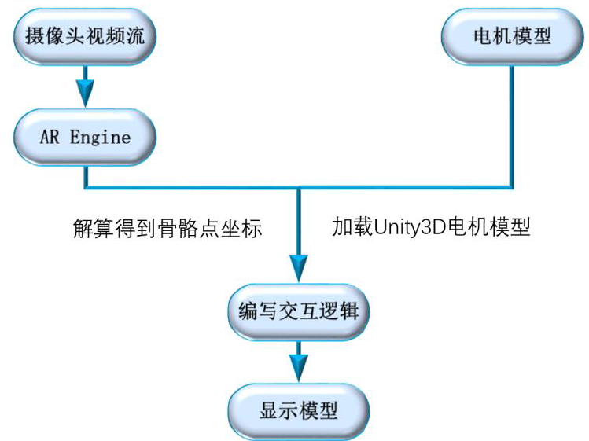
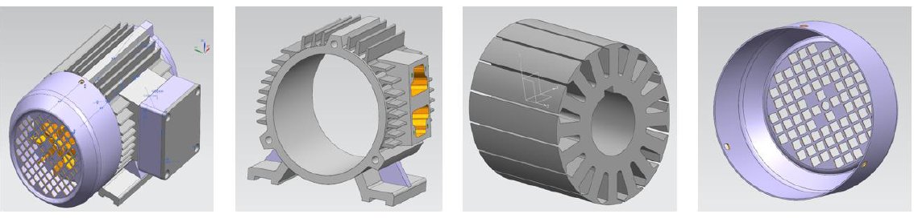
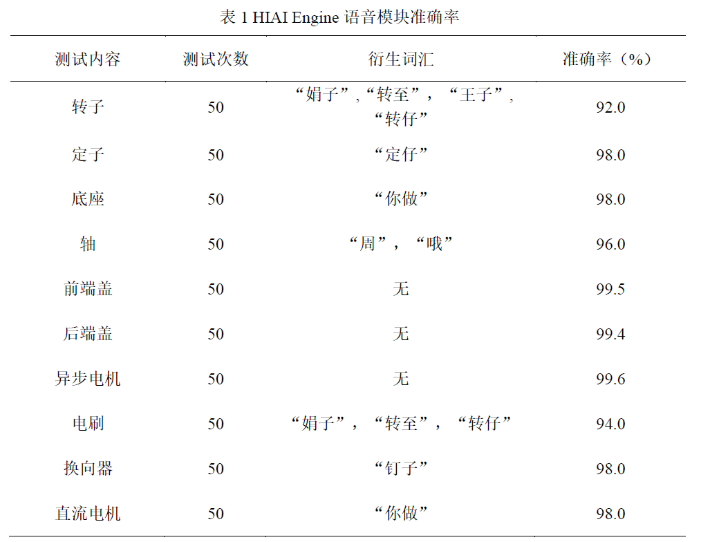
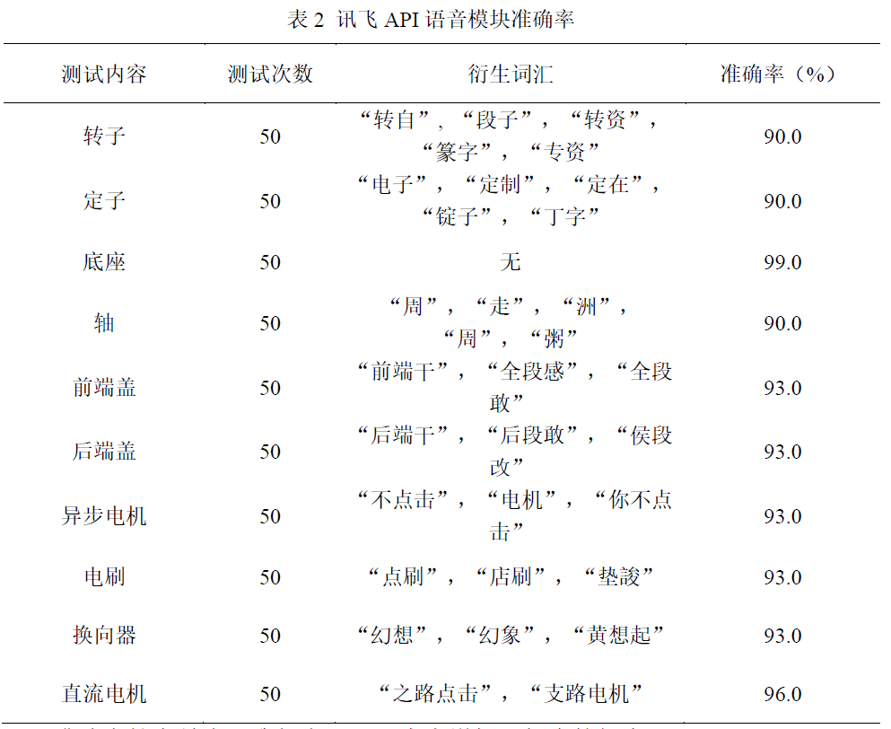
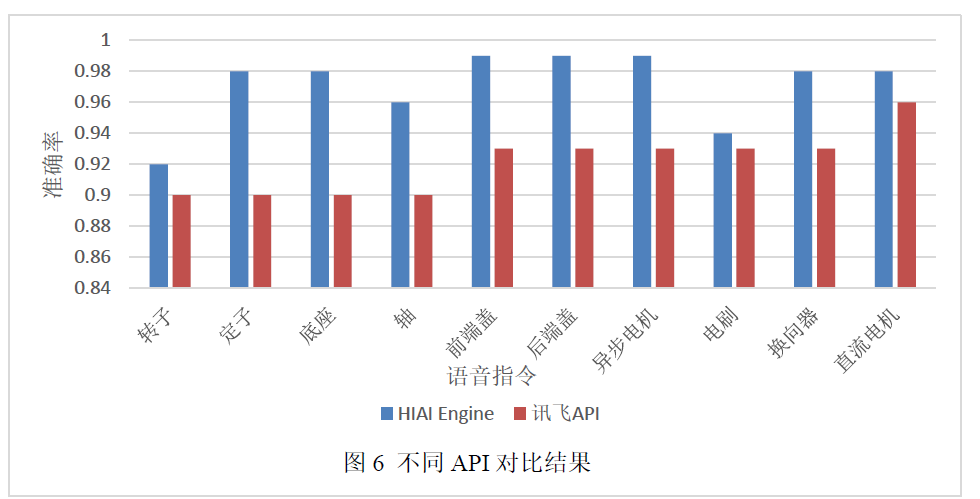
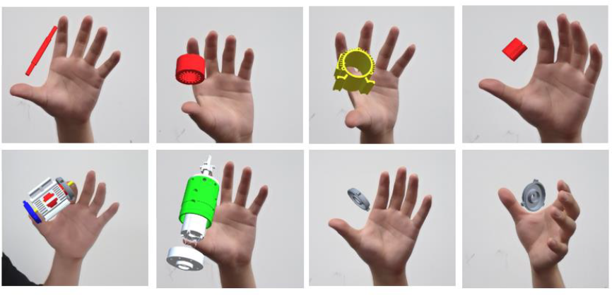
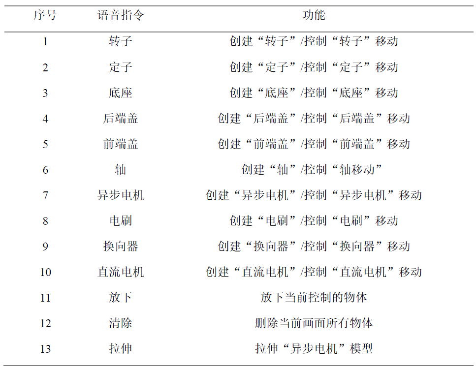

视频演示
开发文档
一、摘要
由于电机拆装及故障诊断的教学内容受实体环境影响，很难让学生亲自动手体验学习。而现有的VR设备体积大，价格贵，难以在学生中普及，且实时手部姿态估计由于计算量较大，因此传统方案受限于高端GPU加速运行，而HUAWEIHIAI Engine 和HUAWEI AR Engine在NPU加速芯片上以达到30fps的解算性能，因此，我们基于HUAWEI HIAI Engine和HUAWEI AR Engine，研发发具备实时交互性的电机拆装及故障诊断App，融合语音识别、人工智能，增强现实等技术为教学提供逼真性、沉浸性和交互性强的教学及问题解决情境，完成在课堂上难以完成的实验和展示，加强了学生的沉浸式体验，学习实操接线短路、内壁摩擦等具备一定危险性的故障诊断，提升教学效果。
二、作品介绍
特色描述
基于HUAWEI HIAI Engine和 HUAWEI AR Engine，操控虚拟空间的电机三维模型，可结合语音指令对操作物体的控制例如 拉伸 清除 ，旋转等，并且可以根据教学需求提供不同的电机模型，实现了仅通过一部华为手机就可以动手拆装电机模型，降低了电机教学的成本，激发学生学习电机的兴趣
背景分析
电机拆装及故障诊断是上海电机学院电气工程及相关专业的重要实习教学内容，由于实验实体环境受限，学生人数较多，难以实现一人一机的拆卸，学生实操和练习的时长受限；同时，出于安全性考虑，由于电机的线圈接线短路、内壁摩擦等故障可能会造成升温、冒烟及燃烧等具有危险性的故障诊断项目，不宜在实验环境中复现，仅为学生进行陈述 [1]。为解决该问题，拟基于华为 AI引擎，开发具备实时交互性的电机拆装及故障诊断实习 App，融合人工智能，增强现实等技术，加强学生的实习实操环境训练，提升上海电机学院的教学效果。应用
应用市场分析
当前增强现实技术（ AR）以及语音识别技术已经在娱乐、营销、教育等许多行业当中生根发芽。但是在目前，如何将上述技术赋能于教育依然是一个全新的领域。
1.潜在目标客户：学校教学及用户学习 。

对于实际应用的三相异步电动机展示如图１所示，仅展示了电动机部分部件的名称，虽然加以文字叙述，但学生对各部件及其作用缺乏认识。而采用虚拟现实设备时其构造如图1所示，每个学生都可通过手机，对不同电动机的内部构造进行观察，并可以在转动过程中，深度观察每个部件的结构。
同时教师引导学生观察电动机哪些部件是转动的，哪些部件是固定不动的，让学生更加直观的了解到电动机是由定子和转子构成， 发现转子是由线圈与换向器构成，定子是由电磁铁与电刷构成。整个探究活动以学生为主体，学生参与感强烈，思维活动充分、深入，教师仅需在适当时 机加以引导和总结，比起传统的讲授式及利用图片进行教学，虚拟现实设备以其逼真的情景，更贴近生活实际，通过动手动脑的方式，使学生的感性认识更充足，理解更深入 [2]。
2.竞争对手
目前基于虚拟现实的应用软件不断推出，AR也逐步走入课堂教育，带来了新体验新面貌。比如苹果公司的 ARKit,让苹果 App开发者可以利用苹果的软硬件资源快速开发 AR应用。 它们有很多优秀的教育类 App，比如 开发商 Visible Body推出的一款《人体解剖学图谱》（ Human Anatomy Atlas）的应用 。 但值得注意的是 这类 App只是局限于简单的在屏幕上拖动模型，依靠滑动屏幕来实现交互功能。如果像科幻电影那般，通过语音指令在空中做几个动作，来实现人机之间的交互，那毫无疑问将会让我们工作学习的便利性与直观性大大提升，我们团队的初衷就源于此，通过把语音指令和骨骼识别结合来实现电机的虚拟拆装等功能 。
三、实现方案
本App开发过程主要分为三个部分 ，包括语音识别 ，骨骼实时识别 以及三维建模 ，如下图2所示流程图：

语音识别技术
核心技术：HUAWEI HIAI Engine，语音识别 。
基于HUAWEI HIAI Engine的语音识别相关 API，在 Unity3D中调用 Android Studio的语音识别模块，并同时将语音识别的结果反调入 Unity中交互逻辑的词库进行匹配，以实现语音控制指令，具体流程图如图 3所示：
骨骼实时识别
核心技术：HUAWEI AR Engine，手部骨骼跟踪，人体骨骼跟踪。
使用HUAWEI AR Engine的骨骼识别 API和跟踪 15个人体骨骼点的位置和姿态，形成人体骨骼图 ，通过计算得到的 3D坐标 [3]- [5]，利用 Visual Studio对具体的交互逻辑（包括电机模型的实例化，渲染以及电机操作的逻辑）进行编写，最后通过Unity3D打包发布，具体流程图如图 4所示：

三维建模
选取教学实验中常见的异步电机、直流电机等电机种类并 使用 3Ds Max软件进行模型绘制， 绘制结果如图5所示 。

四、性能测试
4.1硬件环境准备
准备一部华为 Mate 20 pro手机 。
4.2软件环境准备
1.EMUI8.0 Android5.0以上的操作系统 。
2.HUAWEI AR Engine（打开 App会自动提示安装方法，需在有网络环境下安装）或到华为应用市场 搜索 “华为 AR Engine”。
3.打开麦克风和录像机权限
4.2测试流程：
本次测试流程主要分为以下几个环节， App运行测试，语音识别率测试，骨骼提取模块测试。
- 1.App运行测试
在 Unity中编译好整体 APK文件，将其导入手机中，点击图标，提示安装华为 AR Engine，安装成功后，再次点击 App能正常运行。 - 2.语音识别模块测试
我们将在实操环境中的常用操作比如拿起、放下、清除等 简单操作设为指令集（指令集详见报告末尾 App操作手册）通过点击开始按钮说出对应指令即可在手机屏幕上出现相应模型并进行控制移动、旋转。因此语音识别测试通过 HIAI Engine与科大讯飞语音的 API在安静环境下进行横向对比，相同语音指令进行测试得到准确率的结果如 下列表所示：


注：准确率较高是由于我们在匹配词库中增加了相应的衍生词汇。对不同 API对比结果如下 图8所示， HIAI Engine的平均识别准确率为且衍生词汇较少，而讯飞API仅为 93.0%且衍生词汇较多，因此 HIAI Engine性能要明显优于讯飞API

- 3.骨骼提取模块测试：
通过语音指令得到的电机模型在操作过程中较为流畅 ,图片每秒刷新率（FPS）平均达到了29.2以上， 可满足虚拟仿真实验的要求。
综上，通过对本产品进行的以上三项性能测试，测试结果较好，无明显漏洞
五、创新性
创新性的使用骨骼 实时识别功能 实现虚拟空间对不同电机型号的简单操作包括抓取、放下、拉伸等功能 ，如下图9所示：
图8 手部骨骼抓取图 创新性的将 HUAWEI HIAI Engine和 HUAWEI AR Engine功能结合，实现沉浸式的实验交互体验。
安全、便捷地实现了电机拆装实验，将 HUAWEI HIAI Engine和 HUAWEI AR Engine结合成功应用在教育领域。
六、总结
基于HUAWEI HIAI Engine 和 HUAWEI AR Engine开发了一款电机虚拟拆装故障诊断教学 App，实现了仅通过一部手机就可以进行不同电机模型的拆装教学为电机拆解的学习带来了一种全新的，智能化的模式，提高了学生的学习兴趣，增强了学习的记忆效果，为学习电机知识带来了良好的体验感受，更加容易被学生接受，移动端的产品也可以覆盖的更广泛，使得用户可以随时随地利用碎片化
七、APP操作手册
由于本应用采用了HUAWEI AR Engine的手部骨骼 跟踪 。 目前 仅有 华为 Mate 20pro的手机型号支持该 App正常使用，因此操作过程中 务必 使用该型号手机，后续会开放所有机型，具体手机型号请参考官方说明，相关操作方式请观看作品介绍。
点击打开 App后，会提示安装 华为 AR Engine（已安装不会提示），安装完成之后，再次打开 App，按下 开始 按钮开始说话。
语音指令根据实操环境下的需求以实现不同的功能，其中序号1-11的语音指令可实现物体的创建、移动以及放置功能，序号 12-13可实现物体的拉伸、清除功能。

八、FAQ
- 每次输入不同的语音指令都需提前先按下 开始 按钮嘛？
是的，每次输入不同的语音指令都需要提前按下开始 按钮，才可以继续说话。 - 按了按钮没有反应是什么原因？
1.请确认左上角是否有 字符 用户结束说话 ”出现，若有请确认开启麦克风权限且无其他后台应用程序占用录音权限后重新 说话，若无请继续以下步骤。
2.请确认手机 EMUI为 8.0 Android5.0以上且 型号为华为 MATE 20 Pro若是 请及时联系开发人员 ，若不是请更换 MATE 20 Pro手机进行使用 。 - 产品打不开怎么办？
请检查手机型号是否为
HUAWEI MATE 20Pro，若不是请更换 MATE20 Pro手机进行使用，若是请联系开发人员 ，可提供硬件测试服务。 邮箱：724905300@qq.com